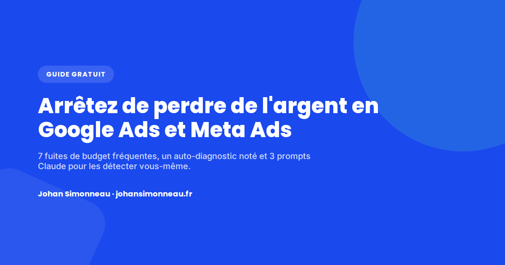

Guide gratuit
Arrêtez de perdre de l'argent en Google Ads et Meta Ads
7 fuites de budget qui reviennent sans cesse sur les comptes Google Ads et Meta Ads, un auto-diagnostic noté pour situer le vôtre, et 3 prompts Claude prêts à l'emploi pour les détecter par vous-même.
- Fuites
- 7
- Questions
- 10
- Prix
- Gratuit

Ce que révèle un audit de compte
Ces sept fuites reviennent sans cesse quand on regarde un compte Google Ads ou Meta Ads dans le détail — rarement une seule à la fois, presque toujours plusieurs en même temps. Chacune correspond à du budget qui part chaque mois sans générer ni vente, ni lead, ni appel.
Fuite 1
Tracking cassé ou incomplet
Si votre tracking est mal configuré, Google optimise vos enchères sur des données fausses. C'est comme conduire avec un GPS qui indique la mauvaise route.
Les erreurs de tracking les plus courantes
- Événements mal configurés dans GTM (ex : un achat compté comme une vue de page)
- Pas d'Enhanced Conversions activé → perte de 15 à 30% de données (bloqueurs de cookies)
- Pas de suivi des appels téléphoniques → la moitié de vos conversions sont invisibles
- GA4 mal lié à Google Ads → les conversions ne remontent pas
Comment détecter
Google Ads → Objectifs → Récapitulatif → Diagnostic. Des alertes jaunes ou rouges signalent un problème de tracking.
La règle en 2026 : GA4 lié, Enhanced Conversions activé, balise Google Ads installée, événements de conversion vérifiés. Sans ça, le Smart Bidding travaille avec des données partielles — voir la page Analytics pour la mise en place.
Fuite 2
Landing pages non optimisées (le "panier percé")
Vous payez pour amener du trafic sur une page qui ne convertit pas.
- Pas de numéro de téléphone visible
- Formulaire trop long (plus de 3-4 champs)
- Pas de preuve sociale (avis, logos clients)
- Le message de la pub ne correspond pas au message de la page
La règle
Avant de dépenser 1€ en pub, vérifiez que votre page de conversion tient debout. Le meilleur ciblage du monde ne compense pas un site qui ne rassure pas — voir la page CRO.
Fuite 3
Pas de mots-clés négatifs (ou pas assez)
Google affiche vos annonces sur des requêtes qui n'ont rien à voir avec votre offre. Vous payez des clics de curieux, de chercheurs d'emploi, de gens qui veulent du gratuit.
Ce que disent les données
- Les comptes qui utilisent des négatifs ont un taux de conversion 3x supérieur aux autres (WordStream, fév. 2026)
- 25% des annonceurs n'ont ajouté aucun mot-clé négatif à leur compte (WordStream, sur 15 666 comptes)
- Les négatifs réduisent le budget gaspillé de 25 à 40% en moyenne (WordStream)
- Depuis mars 2025, Google permet jusqu'à 10 000 négatifs par campagne PMAX (100x plus qu'avant)
Comment détecter
Google Ads → Insights et rapports → Termes de recherche, sur les 30 derniers jours. Des requêtes avec "gratuit", "emploi", "avis", "tuto", "comment faire", "pas cher" — c'est du budget qui fuit.
La différence entre un ROAS de 2x et un ROAS de 10x se joue souvent là : des listes de négatifs par catégorie (emploi, gratuit, DIY, concurrents, hors-zone), auditées chaque semaine.
Fuite 4
Performance Max cannibalise votre Search
PMAX est censé optimiser sur tous les canaux Google. En réalité, il chevauche très souvent les campagnes Search existantes.
Les chiffres clés PMAX en 2026
- 91,45% des comptes ont un chevauchement de mots-clés entre Search et PMAX (Optmyzr, 503 comptes)
- Dans les cas de chevauchement, le Search surperforme PMAX presque 2x plus souvent
- L'adoption de PMAX est passée de 60% à 71% des annonceurs en un an
- Les négatifs PMAX ne s'appliquent qu'au Search et au Shopping — 40 à 70% du budget PMAX (Display, YouTube, Discover) reste incontrôlable
Concrètement, PMAX réattribue des conversions que le Search aurait captées de toute façon — en particulier sur les mots-clés de marque. Le ROAS PMAX a l'air bon, mais c'est un trompe-l'œil.
Comment détecter
Depuis novembre 2025, Google a ajouté le reporting par canal dans PMAX : campagne PMAX → Performance par canal. Plus de 40% du budget en Display et Discover signale des impressions financées, pas des conversions.
Ce qu'il faut faire
Activer les exclusions de marque dans PMAX (obligatoire depuis fin 2025), ajouter des négatifs au niveau campagne, comparer le ROAS PMAX par canal au ROAS Search pur.
Fuite 5
Mono-canal (Google seul ou Meta seul)
Si tout le budget est sur Google, la hausse des CPC (autour de +27% en un an en e-commerce) se subit sans plan B.
Pourquoi le multi-leviers change tout
- Google Ads = intention (le prospect cherche activement) → fort taux de conversion, CPC élevé
- Meta Ads = découverte (le prospect scrolle) → CPC plus bas, conversion plus longue
- Bing Ads = 10 à 15% de trafic additionnel, souvent à CPC nettement moins cher que Google
- Pinterest Ads = inspiration (mode, déco, food) → trafic qualifié ultra-niché
Le piège de l'attribution
Un prospect voit une pub Meta → il tape le nom de la marque sur Google → il convertit via Google Ads. Couper Meta fait baisser les conversions Google quelques semaines plus tard. Les deux canaux se nourrissent mutuellement — voir les pages SEA et SMA.
Fuite 6
Audiences mal configurées dans Performance Max
Les "signaux d'audience" dans PMAX sont censés guider l'algorithme vers les meilleurs clients. La plupart des annonceurs laissent cette section vide.
Sans signaux précis, Google tâtonne pendant 2 à 4 semaines au lieu de cibler les bons profils — du budget d'apprentissage qui pourrait être largement réduit.
Ce qu'il faut faire
Uploader la liste clients (Customer Match, le signal le plus puissant), ajouter des audiences d'intention personnalisées, exclure les audiences à faible ROAS, éviter de dupliquer les groupes d'assets (les performances convergent vers la même moyenne).
Fuite 7
Pilotage au ROAS global au lieu du ROAS par segment
Un ROAS global à 4x rassure. Mais derrière ce chiffre unique se cachent souvent des écarts énormes : les best-sellers qui font x10, des produits qui font x0,5, du retargeting sur clients existants qui gonfle la moyenne, et des nouveaux clients qui coûtent 3x plus cher que ce qu'on croit.
Comment détecter
Segmenter le reporting par : nouveaux clients vs existants, catégories de produits, zones géographiques, types de campagnes.
La règle d'or
Piloter par la marge, pas par le ROAS global. Un ROAS de 3x sur un produit à 60% de marge est meilleur qu'un ROAS de 5x sur un produit à 10% de marge. Sans ce calcul, l'optimisation vise le mauvais objectif.
Faites votre auto-diagnostic
10 questions, 2 minutes, un verdict clair. Répondez Oui ou Non à chaque ligne.
Utilisez ces 3 prompts Claude pour diagnostiquer vos Ads vous-même
Copiez-collez ces prompts dans Claude avec vos propres données. Gratuit, pas besoin d'abonnement payant.
Prompt 1 — Trouver vos mots-clés parasites
Quand l'utiliser : pour savoir combien de votre budget part en requêtes inutiles.
- Google Ads → Insights et rapports → Termes de recherche
- Sélectionnez les 30 derniers jours
- Exportez en CSV
- Collez le CSV dans Claude avec le prompt ci-dessous
Je vais te donner la liste de mes termes de recherche Google Ads des 30 derniers jours. Analyse-les et identifie : 1. Les termes qui n'ont aucun rapport avec mon activité (requêtes parasites) 2. Les termes avec "gratuit", "emploi", "avis", "tuto", "comment", "pas cher" ou similaire 3. Les termes qui ont généré des clics mais 0 conversion 4. Les termes de marque (mon nom) qui gonflent artificiellement mon ROAS Pour chaque catégorie, donne-moi : - La liste des termes à ajouter en négatifs - Une estimation du budget que je pourrais économiser - Un classement par impact (les plus coûteux d'abord) Mon activité : [DÉCRIVEZ VOTRE ACTIVITÉ EN 2 LIGNES] Mon budget mensuel Google Ads : [MONTANT] Voici mes termes de recherche : [COLLEZ VOTRE EXPORT CSV ICI]
Résultat attendu : une liste de mots-clés négatifs à ajouter immédiatement, classée par impact budgétaire. Les comptes qui utilisent des négatifs convertissent 3x mieux (WordStream, 2026).
Prompt 2 — Détecter la cannibalisation PMAX / Search
Quand l'utiliser : si vous avez des campagnes Search ET Performance Max en parallèle et voulez savoir si PMAX vole des conversions au Search.
- Exportez les données de vos campagnes Search (impressions, clics, coût, conversions, ROAS)
- PMAX → Performance par canal → exportez
- Collez les deux dans Claude
Je gère des campagnes Google Ads avec du Search ET du Performance Max. Voici les données de mes campagnes Search : [COLLEZ VOS DONNÉES SEARCH] Voici les données de mon Performance Max par canal : [COLLEZ VOS DONNÉES PMAX PAR CANAL : Search, Shopping, Display, YouTube, Discover] Analyse et dis-moi : 1. Quel % du budget PMAX part en Display/Discover (potentiellement gaspillé) 2. Y a-t-il un chevauchement entre les requêtes Search et PMAX Search 3. Est-ce que PMAX "vole" des conversions au Search (cannibalisation) 4. Quelle serait la meilleure répartition de budget pour mon cas 5. Les 3 actions correctives prioritaires Mon secteur : [VOTRE SECTEUR] Mon budget total : [MONTANT]
Pourquoi c'est important : 91% des comptes ont un chevauchement PMAX/Search, et le Search surperforme PMAX presque 2x plus souvent dans ces cas (Optmyzr, 2025).
Prompt 3 — Construire votre stratégie multi-leviers
Quand l'utiliser : pour savoir si diversifier vos canaux a du sens et comment répartir votre budget.
Je dépense actuellement [MONTANT]€/mois en publicité en ligne. Actuellement je suis sur : [Google Ads seul / Meta Ads seul / les deux / autre] Mon activité : [DÉCRIVEZ EN 3 LIGNES] Mon panier moyen : [MONTANT]€ Ma marge brute : [POURCENTAGE]% Mon objectif : [ventes en ligne / leads / trafic en magasin] Mon secteur : [e-commerce / services B2B / professions libérales / rénovation / autre] En te basant sur des benchmarks Google Ads récents (CPC moyen tous secteurs autour de 4,50€, CPC e-commerce autour de 3,70€, ROAS médian e-commerce autour de 3,5x) : Recommande-moi : 1. La répartition idéale de mon budget entre Google, Meta, et éventuellement Bing/Pinterest 2. Les types de campagnes à lancer sur chaque canal 3. Le ROAS/CPA que je devrais attendre par canal selon mon secteur 4. Un plan de test sur 3 mois 5. Les 3 premières actions à faire cette semaine
Résultat attendu : un plan multi-leviers personnalisé avec répartition budgétaire, objectifs par canal et calendrier d'actions.
FAQ
Ce guide est-il vraiment gratuit ?
Oui, entièrement. L'article, l'auto-diagnostic et les 3 prompts sont accessibles directement sur cette page, sans email ni inscription.
Faut-il un abonnement Claude payant pour utiliser ces prompts ?
Non. Un compte Claude gratuit suffit pour coller vos exports et obtenir une analyse.
Pour continuer sur ce sujet.